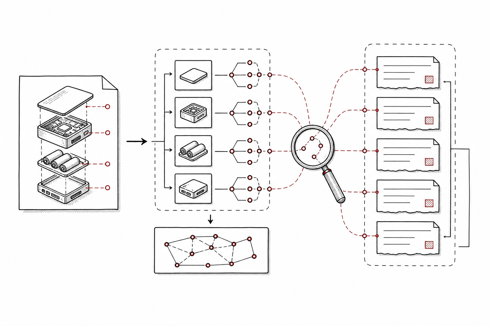
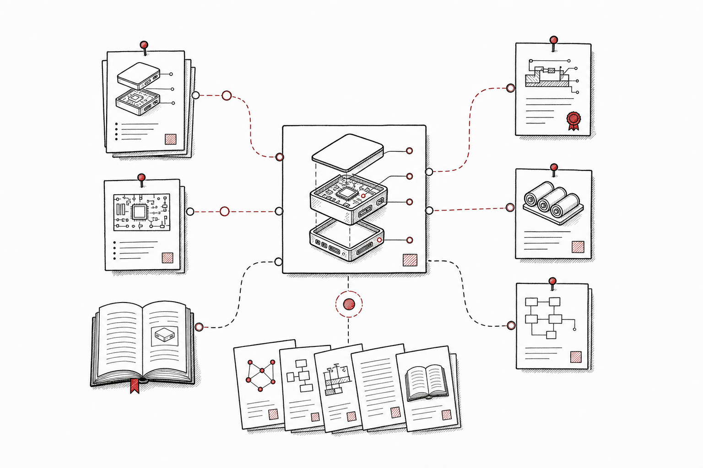
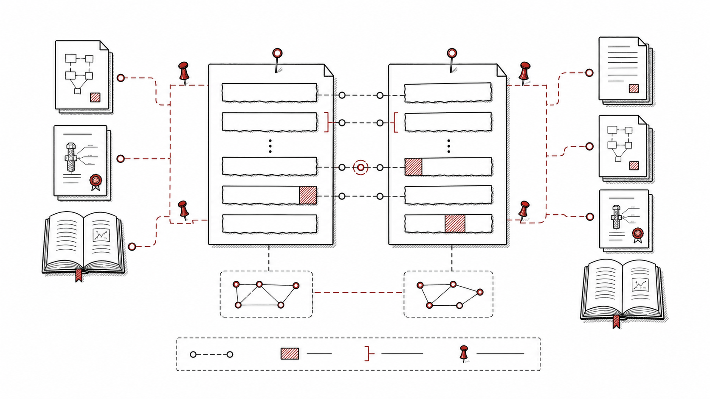
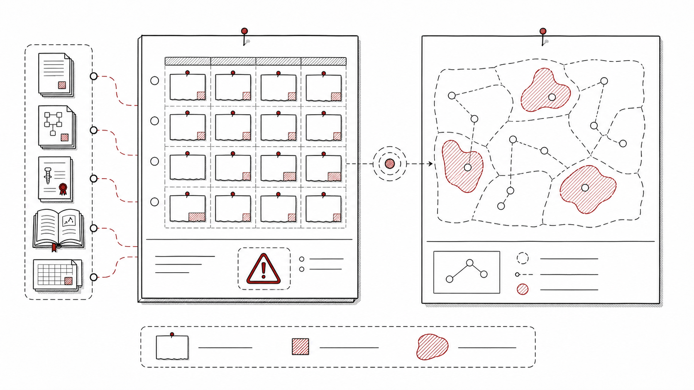

输入
技术 idea、claim 草稿、产品功能描述、研发路线假设，以及目标国家、领域和时间范围。
SciBase 面向技术 idea、专利草稿和研发立项提供跨论文、专利、图书、标准的相似证据定位。它把“有没有人做过”拆成技术要素、相似来源、claim 差异和 novelty 风险。

这个场景需要的不只是相似文献列表，而是能支持专利、研发和投资判断的证据对齐、差异解释和风险分层。
技术 idea、claim 草稿、产品功能描述、研发路线假设，以及目标国家、领域和时间范围。
拆解技术要素，跨论文、专利、图书和标准召回相似证据，进行 claim 对齐与差异定位。
相似证据清单、novelty 风险点、可解释差异、白区机会和继续检索建议。
从 idea 解析到风险结论，每一步都需要可追溯证据，而不是只给一个黑箱分数。

把一句产品想法或一段 claim 草稿拆成对象、动作、材料、流程、约束和效果，形成可检索、可比较的技术要素。

跨论文、专利、图书和标准召回相似技术路径，并将相似证据定位到具体段落、图表、权利要求或引用上下文。

把 claim 要素和相似证据逐项对齐，区分完全覆盖、部分覆盖、相近实现和未覆盖差异，为人工判断提供结构化依据。

在证据对齐基础上输出 novelty 风险、可修改方向、未被充分覆盖的白区，以及下一轮检索或专家复核建议。
Prior-Art 更关注技术相似性和风险判断，其他页面分别展开研究 Agent 与企业知识挖掘。